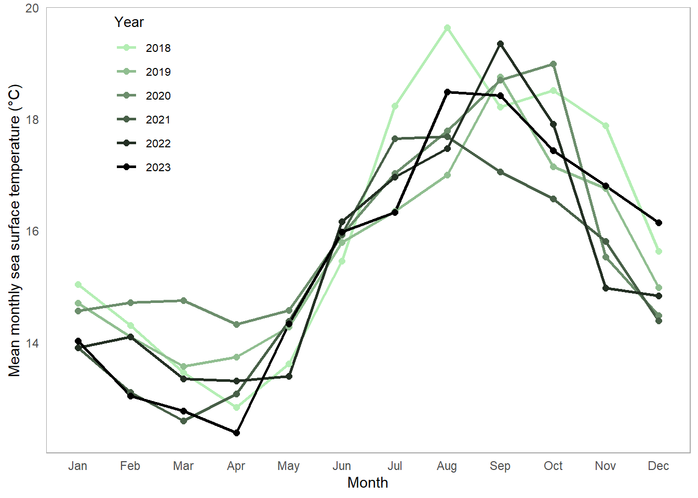
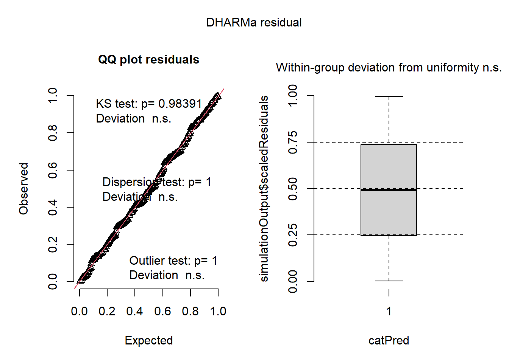
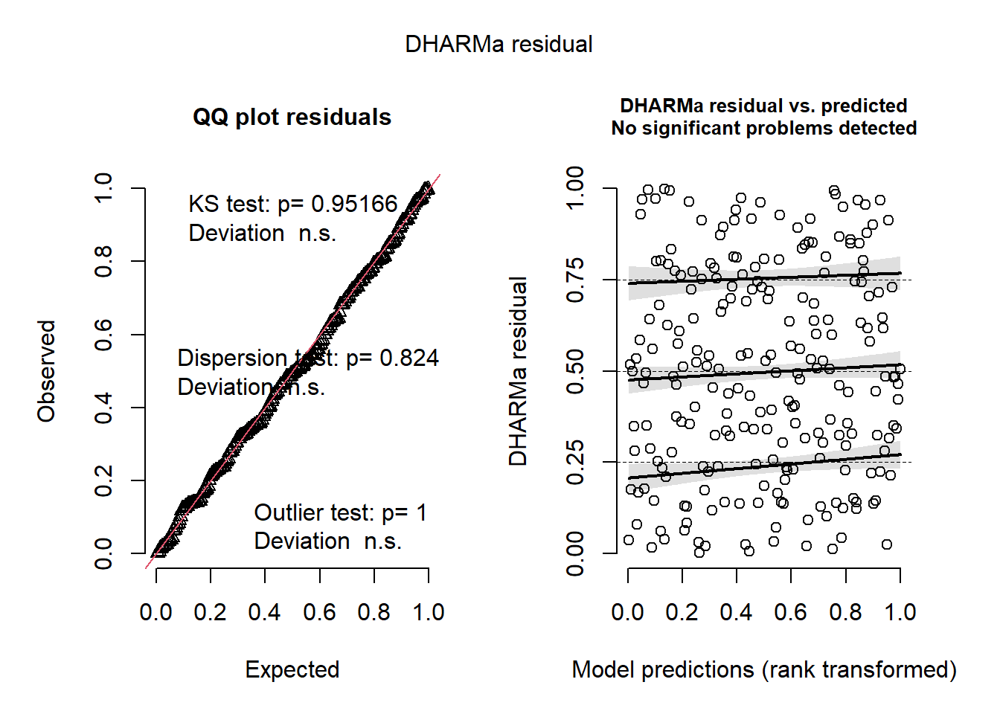
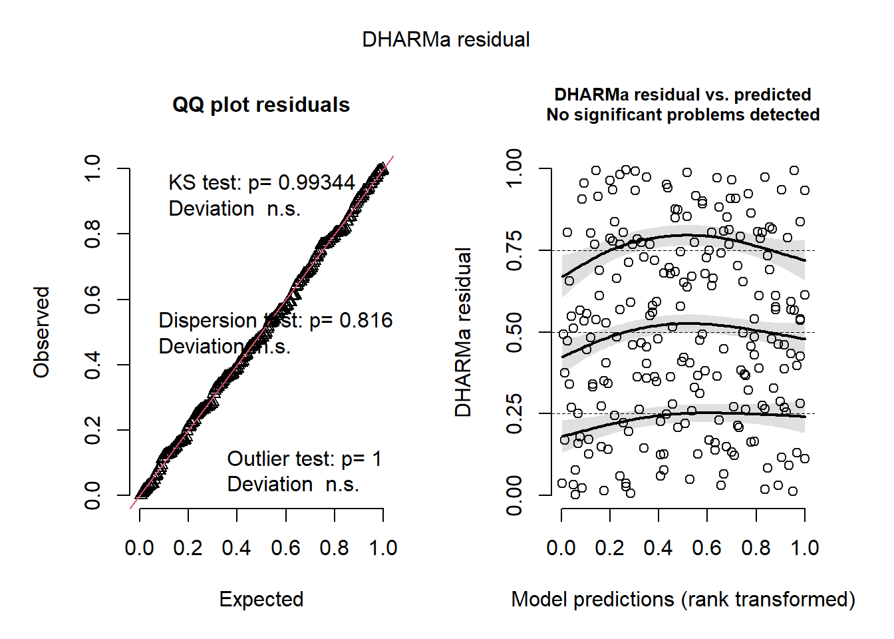
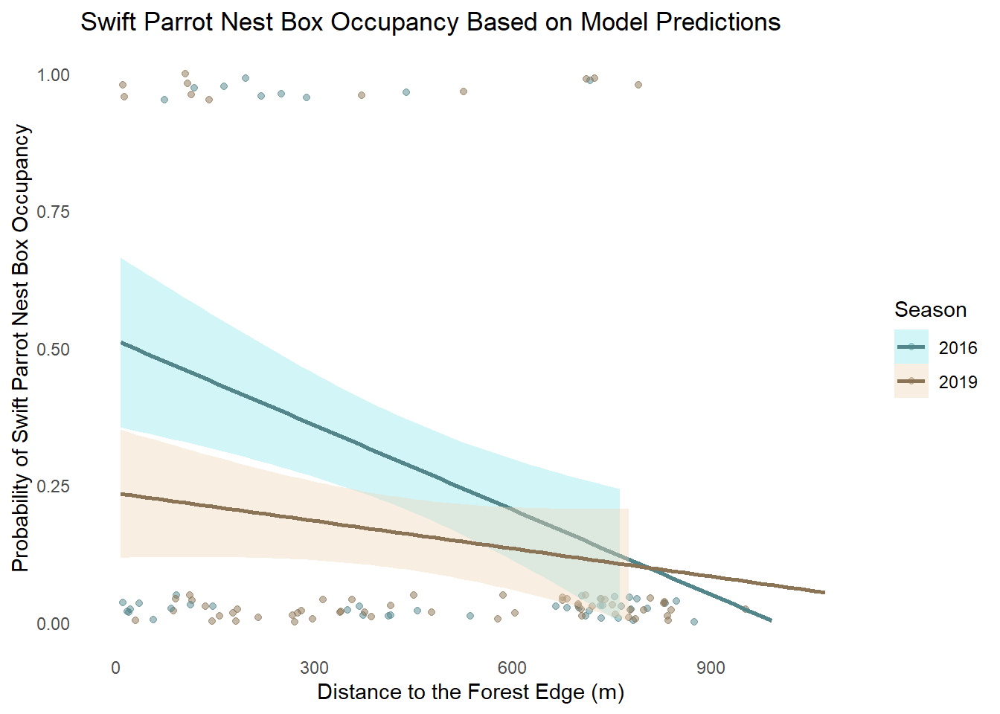

# read in packages
library(tidyverse) # load tidyverse
library(MuMIn) # load MuMIn
library(DHARMa) # load DHARMa
library(stats) # load stats
# read in data
sst <- read_csv("data/SST_update2023.csv") # create sst object from SST_update2023
nest_boxes <- read_csv("data/occdist.csv") # create nest_boxes object from occdistenvs193ds_spr25_final
Part 1. Set up tasks
Set up
Part 2. Problems
Problem 1. Research writing
a. Transparent statistical methods
In part 1, they likely used a Pearson’s r test, since they analyzed the relationship between two continuous variables (distance and annual nitrogen load). In part 2, they likely used ANOVA, since they compared the mean/average nitrogen loads between sources (urban land, atmospheric deposition, fertilizer, wastewater treatment, and grasslands).
b. More information needed
One thing that could have been added to the results section is a post-hoc test, which would communicate which groups differ, instead of just telling that there is a difference between the groups; an example of a post-hoc test that could be used is the Tukey’s Honestly Significant Difference (HSD). This would allow the results to go beyond “we reject the null hypothesis that there is no difference in average nitrogen load…” and be able to communicate which of the groups from urban land, atmospheric deposition, fertilizer, wastewater treatment, and grasslands differ the most. Another thing that would add more context to the results could be providing the mean of each groups’ nitrogen load and their standard deviations. Knowing the mean for each groups’ would allow the reader to know how much the nitrogen load differs per source category, and the standard deviations would help show dispersed the nitrogen load is per source category.
c. Suggestions for rewriting
We found that there was a direct relationship between sources’ distance from headwaters (km) and the annual total nitrogen loads (km). (Pearson’s r test: r = correlation coefficient, p = 0.03, α = significance level, n = sample size). We also found that nitrogen load varied by source type, with certain land-uses impacting the nitrogen load more than others, indicating that land-use can influence nitrogen loading. The post-hoc Tukey’s HSD test identifies ___ as the source(s) that differ(s) the most. (ANOVA: F = F-statistic, p = 0.02, α = significance level, df = degress of freedom, n = sample size)
Problem 2
a. Cleaning and Summarizing
sst_clean <- sst |> # create sst_clean object from sst data frame
mutate(date = ymd(date)) |> # convert to date format
mutate(year = year(date), # pull out year
month = month(date, label = TRUE, abbr = TRUE)) |> # pull out month as factor
filter(year %in% 2018:2023) |> # filter years, keeping 2018-2023
group_by(year, month) |> # group by year and month
summarize(mean_monthly_sst = mean(temp, na.rm = TRUE), # average temp across sites
.groups = "drop") |> # return data frame ungrouped
mutate(year = factor(year)) # convert year to a factor
# create data frame
sst_clean |> slice_sample(n = 5) # display sample of 5 rows from cleaned data# A tibble: 5 × 3
year month mean_monthly_sst
<fct> <ord> <dbl>
1 2021 Apr 13.1
2 2020 Jan 14.6
3 2018 Nov 17.9
4 2018 Oct 18.5
5 2021 Aug 17.7str(sst_clean) # display structure of cleaned data tibble [72 × 3] (S3: tbl_df/tbl/data.frame)
$ year : Factor w/ 6 levels "2018","2019",..: 1 1 1 1 1 1 1 1 1 1 ...
$ month : Ord.factor w/ 12 levels "Jan"<"Feb"<"Mar"<..: 1 2 3 4 5 6 7 8 9 10 ...
$ mean_monthly_sst: num [1:72] 15 14.3 13.5 12.8 13.6 ...b. Visualize the data
# recreate the visualization
ggplot(sst_clean, aes(x = month, y = mean_monthly_sst, group = year, color = year)) + # create plot
geom_line(linewidth = 1) + # add lines
geom_point(size = 2) + # add points
scale_color_manual(values = colorRampPalette(c("darkseagreen2", "black"))(6)) + # manually pick color gradient
labs(x = "Month", # label x-axis
y = "Mean monthly sea surface temperature (°C)", # label y-axis
color = "Year") + # color gradient depicts years
theme_minimal() + # use minimal theme
theme(panel.grid = element_blank(), # remove grid lines
panel.border = element_rect(color = "darkgrey", fill = NA), # make plot border dark grey line
panel.background = element_rect(fill = "white"), # make panel background white
legend.position = c(0.15, 0.8), # position the legend
legend.title = element_text(size = 10), # change legend title font size
legend.text = element_text(size=8)) # change legend labels font size
Problem 3. Data Analysis
a. Response variable
The 1s and 0s in this data set indicate whether or not there were birds nesting in a nesting box, and what kind. A 0 in the column indicated that that species was not present in the nesting box, while a 1 indicated that species was using the nesting box.
b. Purpose of study
The Swift Parrots are an endangered species, and the nesting boxes were implemented as part of conservation efforts for this study, and the Common Starlings and Tree Martins are considered competition to the parrots success. They do not rely on the nesting boxes, but use them anyway, which can displace the Swift Parrots and decrease their nesting grounds.
c. Difference in “seasons”
The “seasons,” or years, referred to in this study are 2016 and 2019, and they represent the breeding seasons of the Swift Parrots. Comparing the two years can help analyze whether or not the parrots nesting patterns with the artificial nesting boxes are consistent, or if they change depending on season specific factors.
d. Table of models
# create model summary table of 4 models
model_table <- tibble(model_number = 1:4, # give models numbers (1-4)
season = c("No", "Yes", "Yes", "No"), # Does the model include season?
distance_to_forest_edge = c("No", "Yes", "No", "Yes"), # does the model include distance to forest edge?
model_description = c("Null Model (no predictors)", # description of model with neither variable
"FUll Model (season and edge distance)", # description of model with both variables
"Season-Only Model", # description of model with only season
"Distance-Only Model")) # description of model with only distance
print(model_table) # display model summary table # A tibble: 4 × 4
model_number season distance_to_forest_edge model_description
<int> <chr> <chr> <chr>
1 1 No No Null Model (no predictors)
2 2 Yes Yes FUll Model (season and edge dista…
3 3 Yes No Season-Only Model
4 4 No Yes Distance-Only Model e. Run the models
# model 1: null model (no predictors)
Model_1 <- glm(sp ~ 1, # include neither variable
data = nest_boxes_clean, # data frame
family = binomial) # data is binomial
# model 2: full model (season and edge distance)
Model_2 <- glm(sp ~ season + edge_distance, # include both variables
data = nest_boxes_clean, # data frame
family = binomial) # data is binomial
# model 3: season-only model
Model_3 <- glm(sp ~ season, # include only season
data = nest_boxes_clean, # data frame
family = binomial) # data is binomial
# model 4: distance-only model
Model_4 <- glm(sp ~ edge_distance, # include only distance to forest edge
data = nest_boxes_clean, # data frame
family = binomial) # data is binomialf. Check the diagnostics
# null model
sim1 <- simulateResiduals(Model_1) # create sim1
plot(sim1) # plot sim1
# full model
sim2 <- simulateResiduals(Model_2) # create sim2
plot(sim2) # plot sim2
# season-only model
sim3 <- simulateResiduals(Model_3) # create sim3
plot(sim3) # plot sim3
# distance-only model
sim4 <- simulateResiduals(Model_4) # create sim4
plot(sim4) # plot sim4
g. Select the best model
aic_results <- AICc(Model_1, Model_2, Model_3, Model_4) # calculate AICc values for all models
aic_results$Model <- c("Null Model", "Full Model", "Season-Only Model", "Distance-Only Model") # label models for readability
aic_results <- aic_results %>% arrange(AICc) # Sort by AIC
print(aic_results) # display table of AIC scores df AICc Model
Model_2 3 226.3133 Full Model
Model_4 2 229.6716 Distance-Only Model
Model_3 2 236.3744 Season-Only Model
Model_1 1 238.8318 Null ModelGiven the AIC values, the Full Model that includes both the season and the distance to the forest edge is the best model when analyzing the Swift Parrots occupancy and use of the nesting boxes.
h. Visualize the model predictions
ggplot(nest_boxes_clean, aes(x = edge_distance, y = sp, color = season)) + # create plot
geom_jitter(width = 8, height = 0.05, alpha = 0.5) + # add jittered data points
stat_smooth(method = "glm", # use generalized linear model
methods.args = list(family = "binomial"), # data is binomial in logistic regression
se = TRUE, # display 95% confidence intervals
fullrange = TRUE, # line spans whole x-axis range
aes(fill = season)) + # fill confidence interval ribbon with same color as season
scale_y_continuous(name = "Probability of Swift Parrot Nest Box Occupancy", # label y-axis
limits = c(0, 1)) + # y-axis probability range
scale_x_continuous(name = "Distance to the Forest Edge (m)") + # label x-axis
theme_minimal() + # use minimal theme
theme(panel.grid = element_blank()) + # remove gridlines
scale_color_manual(values = c("cadetblue4", "burlywood4")) + # manually set season colors
scale_fill_manual(values = c("cadetblue2", "bisque2")) + # manually set confidence interval colors
labs(title = "Swift Parrot Nest Box Occupancy Based on Model Predictions", # add plot title
color = "Season", # add legend label for line color
fill = "Season") # add legend label for confidence interval color
i. Write a caption for your figure
Figure 1. Swift Parrot Nest Box Occupancy Based on Model Predictions.
This plot displays the predicted probability of Swift Parrot nest box occupancy, using distance to the forest edge, and season (2016 and 2019) as the explanatory variables. The jittered points represent the probability of Swift Parrot occupancy in the nest boxes, and the ribbons indicate the 95% confidence intervals based on model predictions.
Source: Stojanovic, Dejan et al. (2021). Do nest boxes breed the target species or its competitors? A case study of a critically endangered bird. [Dataset]. Dryad. https://doi.org/10.5061/dryad.83bk3j9sb
j. Calculate model predictions
# create additional data points for distances to forest edge and seasons
expanded_nest_boxes <- expand.grid(edge_distance = c(0, 900), # at and far from forest edge
season = factor(c(2016, 2019)), # season as a factor
levels = levels(nest_boxes_clean$season)) # keep levels the same
predictions <- predict(Model_2, # use model 2 for predictions
newdata = expanded_nest_boxes, # use expanded data frame
type = "response", # give numerical response
se.fit = TRUE) # display standard errors from model 2
predicted_df <- expanded_nest_boxes %>% # create predicted_df object from expanded_nest_boxes
mutate(predicted_prob = predictions$fit, # use predicted probabilities
lower_95 = predictions$fit - 1.96 * predictions$se.fit, # lower CI bound
upper_95 = predictions$fit + 1.96 * predictions$se.fit) # upper CI bound
print(predicted_df) # display predictions edge_distance season levels predicted_prob lower_95 upper_95
1 0 2016 2016 0.48063714 0.31951190 0.6417624
2 900 2016 2016 0.12478375 0.04074396 0.2088235
3 0 2019 2016 0.29803163 0.16657087 0.4294924
4 900 2019 2016 0.06139379 0.01199022 0.1107974
5 0 2016 2019 0.48063714 0.31951190 0.6417624
6 900 2016 2019 0.12478375 0.04074396 0.2088235
7 0 2019 2019 0.29803163 0.16657087 0.4294924
8 900 2019 2019 0.06139379 0.01199022 0.1107974k. Interpret your results
As nest boxes get farther away from the edges of the forest in both seasons (2016 and 2019) the Swift Parrot nest box occupancy decreases, which can be observed in the trend-lines present in Figure 1. This is also shown in the predicted probability based off of Model 2, with the predicted occupancy near the edge of the forest was 48% in 2016 and 30% in 2019 at 0 meters. These predicted occupancies drop as the distance increases from the forest edge with 12% in 2016 and 6% in 2019 at 900 meters. The correlation between distance to the edge of the forest and nest box occupancy patterns indicates that the Swift Parrots prefer to live closer to the edges of the forest, whether it be for increased access to resources or less competitors, and the Common Starlings and Tree Martins may prefer to be farther into the forest. Recognizing this pattern is important, since it allows conversationalists to add more nest boxes to the edge areas of the forest, since that is where the Swift Parrots will benefit from them the most.
Problem 4. Affective and exploratory visualizations
a. Comparing visualizations
The visualizations I created for Homework 2 and Homework 3 are different since my Homework 2 visualization shows my data in a very technical plot, showing the purely statistical side of my findings at the time I made it. On the other hand, my visualization from Homework 3 represents my data in a much more abstract manner, displaying the data as shapes and colors instead of only the data points on a plot with a trend-line. I think that to someone not well-versed in statistics, my affective visualization would not only make more sense to them, but be more visually interesting as well.
Both of my visualizations successfully display the data I found throughout my experiment. I think they both show the relationship between my water consumption and my productivity levels effectively.
In my Homework 2 visualization, I only show the correlation between my hydration and productivity levels, and at the time that I made the visualization, I had not collected a lot of data so it does not completely accurately represent my final findings. In my Homework 3 visualization I had a lot more data to work with, so I was able to expand my piece to show the correlation between more things, such as how much I slept, and if I went outside that day or not, in addition to my water consumption. I think that because of this, the patterns varied between visualizations, simply because the Homework 3 visualization was able to communicate how not only hydration levels might have impacted my productivity levels.
During Week 9’s workshop, the biggest piece of feedback I received was that I should incorporate borders on all of the shapes, instead of just the ones that had the same color next to each other to reduce confusion on the meaning of the borders. I implemented these suggestions, and went on to turn these borders into a way to portray other variables that might have impacted my study by using different colors to outline the shapes based on the variables.
b. Sharing your affective visualization
Completed this activity during workshop in Week 10.